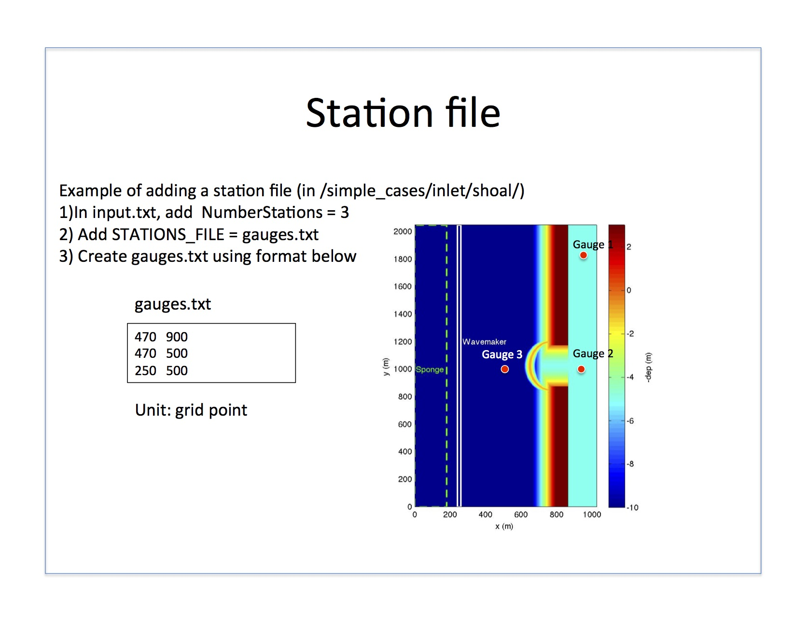

Example: station file¶
For model setup, refer to Output. Station input files (e.g., gauges.txt) have size (# of stations) x 2, where column 1 contains Mglob location (unit = grid points) and column 2 contains Nglob location (unit = grid points) - as shown in the below example. In 1D cases, the Nglob location (second column) needs to be set to 1 for all gauges; if set to 0, station files will not be outputted.
